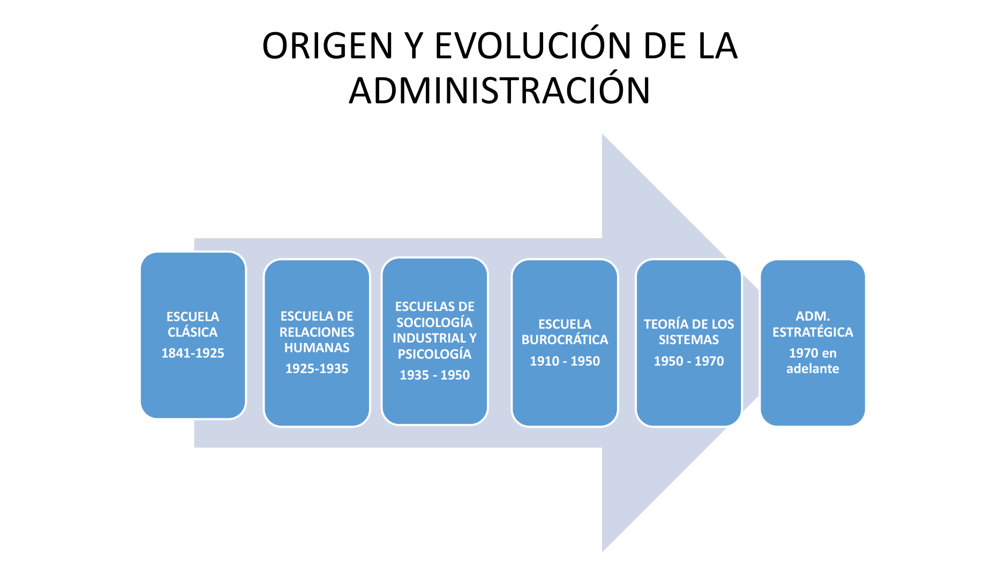
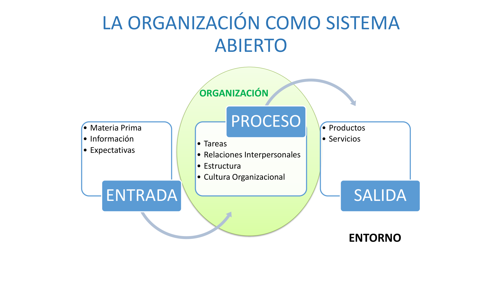
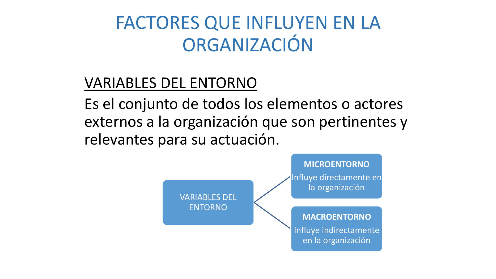
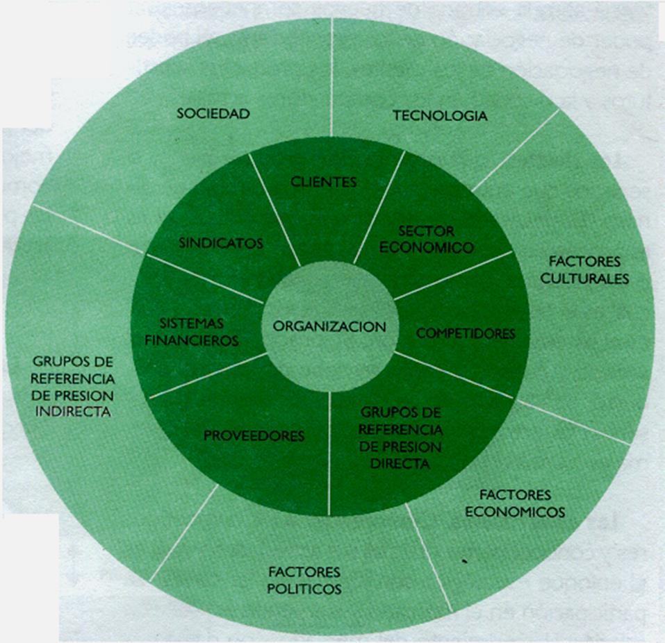
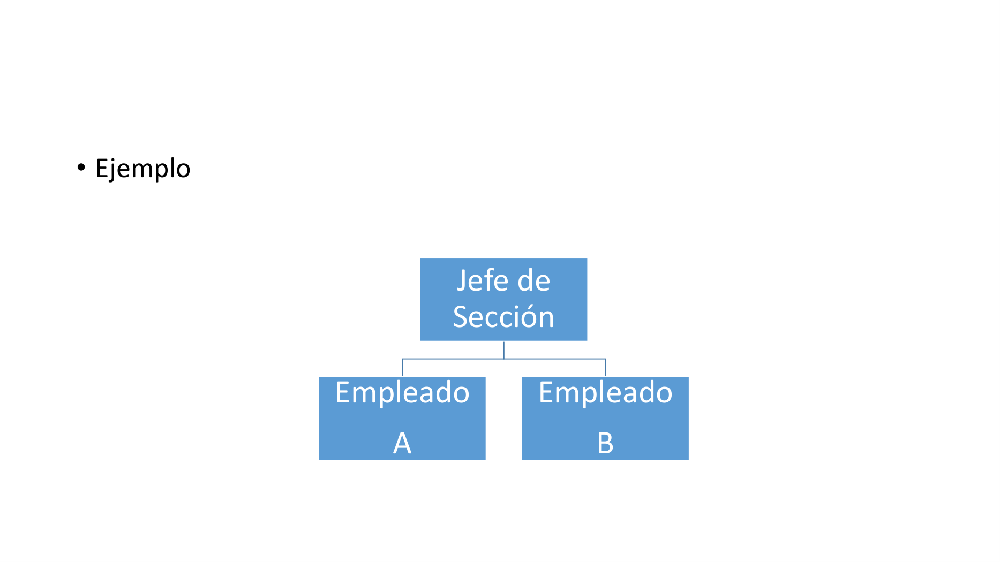
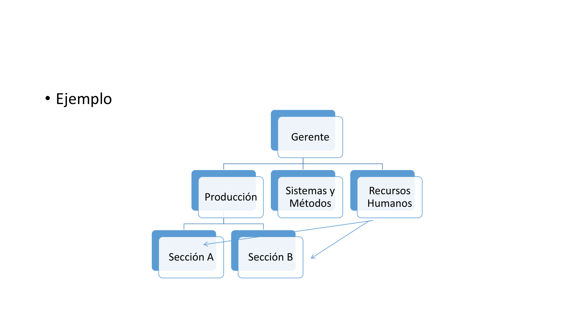
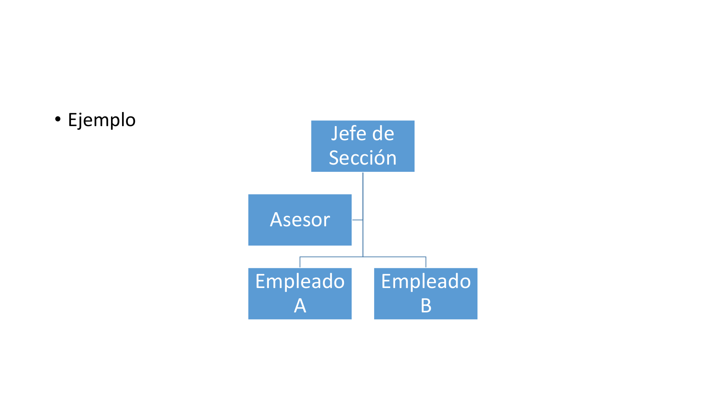

UCES 2026 · Esp. Lic. Brugnoli, Lic. Rudaz · Resumen del apunte de cátedra
U1. Administración: concepto, ciencia/técnica/arte, ciclo administrativo (planificación, organización, dirección, control). Escuelas: Clásica (Taylor + Fayol), Burocrática (Weber), Relaciones Humanas (Mayo), Sociología/Psicología (Maslow + McGregor), Sistemas, Estratégica.
U2. La organización: concepto, características, tipos. Sistema abierto (entrada-proceso-salida). Variables del entorno: macroentorno y microentorno.
U3. Estructuras orgánicas: diseño organizacional, principios (unidad de mando, amplitud de control, delegación, coordinación). Relaciones formales: lineal, funcional, staff. Departamentalización. Centralización vs descentralización.
⭐ Parcial real de la cátedra (con respuestas)
→ Casos resueltos paso a paso → Mapa mental → 3 parciales simulados
La palabra viene del latín: ad ("hacia, dirección") + minister ("subordinación, obediencia"). Administrar es conducir o gestionar recursos para alcanzar un objetivo. Es un medio para un fin, no un fin en sí mismo.
La administración es un proceso de planear, organizar, dirigir y controlar el uso de recursos (humanos, materiales, financieros, tecnológicos) para lograr objetivos en una organización. Es un proceso repetitivo y que se retroalimenta.
| Faceta | Qué hace | Cómo |
|---|---|---|
| Ciencia | Investiga, explica y predice el comportamiento | Mediante hipótesis, teorías, leyes y modelos. Su objeto de estudio: las organizaciones. |
| Técnica | Transforma y opera la realidad | Con un conjunto de herramientas, reglas, normas y procedimientos definidos. Valida la ciencia. |
| Arte | Aplicación personal del administrador | Es subjetivo (depende de cada persona), vivencial (depende de la experiencia), individual (único en cada ser). Vinculado a la personalidad del administrador. |
Ciencia y técnica se complementan: la ciencia investiga y explica, aporta el conocimiento; la técnica opera y transforma mediante reglas. La técnica realimenta a la ciencia para redefinir su explicación.
Son las cuatro funciones que constituyen el proceso administrativo. Es cíclico: termina y vuelve a empezar.
Primer paso. Es prever: determinar los objetivos, armar planes y programar actividades. Se definen qué, cuándo, cómo y quién.
Para qué planificar: evitar sorpresas. Permite anticipar lo que va a ocurrir y decidir qué hacer.
Los objetivos pueden ser generales y específicos. Toda la organización tiene que conocer los objetivos generales para evitar lo que se llama "compartimientos estancos" (cada área tirando para su lado).
Coherencia: los objetivos tienen que ser coherentes vertical (entre niveles jerárquicos) y horizontal (entre áreas del mismo nivel). Comunicación total.
| Tipo | Foco | Representación |
|---|---|---|
| Procedimientos | Métodos de trabajo o ejecución | Flujogramas |
| Presupuestos | Dinero (cuánto se va a gastar) | Tabla de gastos |
| Cronogramas | Tiempo | Diagrama de Gantt |
| Normas de comportamiento | Conductas (cómo actuar) | Manual de convivencia |
Una vez definidos los objetivos, hay que organizar los cuatro elementos:
Implica poner a funcionar la organización. Es la acción: orientar y/o ayudar para ejecutar lo planificado.
| Autoridad | Poder | |
|---|---|---|
| Qué es | Una responsabilidad que se designa | Una habilidad que se ejerce |
| Origen | Te lo designan | Lo construís |
| Nivel | Cargo | Quiénes |
|---|---|---|
| Institucional | Dirección | Directores y altos ejecutivos |
| Intermedio | Gerencia | Gerentes y mandos medios |
| Operacional | Supervisión | Supervisores y encargados |
Comparar lo planificado con lo ejecutado. Tiene 3 pasos:

Contexto: Revolución Industrial. Sustitución del hierro por acero. Vapor reemplazado por electricidad y petróleo. Máquinas automáticas, especialización. Surge el capitalismo financiero.
Hipótesis:
Resultados: productividad aumentó 40% a 300%. Eficiencia subió y se redujo la jornada. Salarios subieron 50% a 100%.
Limitaciones: no contempla al hombre en toda su dimensión (sólo lo ve como pieza productiva). Excesiva exigencia. La búsqueda extrema de especialización generó problemas de coordinación y desaliento.
Hipótesis:
Resultados: determina 5 funciones básicas de la administración. Describe las áreas de operación de una empresa. Plantea los 14 principios.
Limitaciones: considera la autoridad de "derecho divino" y desconoce el papel del líder. Considera al individuo como una constante. Sus ideas de comunicación priorizan la autoridad sobre el flujo de información.
Hipótesis:
Resultados: profundización en organigrama, manual de funciones, autoridad y responsabilidades.
Limitaciones: falta de rigor científico (mezcla teorías, técnicas y leyes). Apego excesivo a reglamentos, papeleo. Es un sistema cerrado (no contempla el entorno).
Hipótesis:
Resultados: selección del trabajador según características humanas para cada tarea. Atención a aspectos sociales del trabajo (por encima de lo productivo).
Limitaciones: trabajo excesivamente teórico, poca aplicación empresarial. Falta rigor científico.
Hipótesis: se enfocaron en el rol del individuo y su personalidad, en la dinámica grupal, motivación y participación.
Resultados:
Limitaciones: sus modelos quedaron limitados a teorías y explicaciones, sin metodología clara de aplicación.
Hipótesis:
Aporte clave: considerar a la organización como un todo interrelacionado teniendo en cuenta el entorno.
Limitaciones: no aporta tanto en lo práctico, sino más bien modelos teóricos.
Surge en un contexto de mayor competencia global y necesidad de planificar a largo plazo. Aporta el pensamiento estratégico, la visión competitiva, los planes estratégicos. Hereda mucho de la Teoría de Sistemas.
Las organizaciones son unidades sociales (o grupos de personas) deliberadamente constituidas para fines específicos.
| Criterio | Tipos |
|---|---|
| Origen del capital | Nacional / Extranjera / Mixta |
| Sistema de autoridad | Autoritarias / Participativas |
| Objetivos | Con fines de lucro / Sin fines de lucro |
| Composición del capital | Públicas / Privadas / Mixtas |

Las organizaciones son sistemas abiertos porque interactúan con su entorno. Tienen 3 momentos:
| Etapa | Qué incluye |
|---|---|
| Entrada | Materia prima, información, expectativas |
| Proceso | Tareas, relaciones interpersonales, estructura, cultura organizacional |
| Salida | Productos, servicios |
El entorno condiciona a la organización, y ésta, como realidad dinámica, condiciona dinámicamente al entorno. Es de doble vía.

Las variables del entorno son el conjunto de elementos o actores externos a la organización que son pertinentes y relevantes para su actuación.

| Variable | Qué es |
|---|---|
| Clientes | Quienes consumen el producto/servicio. Definen la demanda. |
| Competidores | Otras empresas que ofrecen lo mismo o sustitutos. |
| Proveedores | Quienes proveen los insumos. |
| Sector económico | Industria donde opera la organización. |
| Sindicatos | Representan a los trabajadores en negociaciones. |
| Sistemas financieros | Bancos, financieras (acceso a crédito). |
| Grupos de referencia de presión directa | Lobbies, ONGs específicas que influyen al sector. |
| Variable | Qué es |
|---|---|
| Sociedad | Conjunto de la población. |
| Tecnología | Avances tecnológicos del momento. |
| Factores culturales | Valores, costumbres, modas. |
| Factores económicos | Inflación, tipo de cambio, PBI, desempleo. |
| Factores políticos | Gobierno, leyes, regulaciones. |
| Grupos de referencia de presión indirecta | ONGs, organismos internacionales, medios. |
"El movimiento independentista catalán" → factor político (macro). "El atentado de las Ramblas" → factor político (macro). "Aumento del precio del alquiler" → factor económico (macro) + sector económico (micro). "Apertura de franquicias McDonald's" → competidores (micro).
Actividad en la que se define la estructura orgánica, la cual es única y específica para cada organización, teniendo en cuenta su estrategia, entorno y tecnología.
| Principio | Significado |
|---|---|
| Unidad de mando | Cada subordinado debe tener un solo jefe directo. Si tiene dos, se viola el principio (genera conflictos). |
| Delegación | Se puede delegar la acción, pero no la responsabilidad. El que delegó sigue siendo responsable. |
| Amplitud de control | Cantidad de personas que un jefe puede controlar bien. A mayor complejidad de tarea, menor amplitud (menos gente a cargo). |
| Coordinación o relaciones funcionales | Asegurar que todo lo planificado se ejecute armónicamente. |
Hay 3 tipos de relaciones formales que pueden existir en una organización:

Entre superiores y subordinados existen líneas directas de autoridad y responsabilidad. Se aplican a las funciones primarias (las del corazón del negocio).
Características:

Aplica el principio de especialización. Ningún superior tiene autoridad total sobre los subordinados, sino autoridad parcial y relativa según su especialidad.
Características:

Es una combinación de la organización funcional y lineal. Los staff tienen autoridad de asesoría, planeación y control, consultoría y recomendación. No pueden dar órdenes directas a niveles inferiores: sólo pueden asesorar a su superior jerárquico.
Características:
Es la agrupación de actividades y personas en departamentos que permite llevar a cabo el trabajo de la organización.
| Tipo | Cuándo conviene | Ejemplo |
|---|---|---|
| Por funciones | Empresas con productos similares, operaciones estables | Marketing, Ventas, Producción, Finanzas |
| Por área geográfica | Empresas con presencia en muchas regiones | Norte, Sur, Centro / LATAM, EMEA, APAC |
| Por tiempo | Operación 24/7 | Turno mañana, tarde, noche |
| Por proceso | Producción continua, etapas claras | Corte, ensamblado, pintura, empaque |
| Por producto | Empresas con líneas de productos diferentes | P&G: belleza, cuidado del hogar, alimentos |
| Matricial | Proyectos complejos, especialistas multitarea | Cada persona reporta a su área y a su proyecto |
| Centralización | Descentralización | |
|---|---|---|
| Quién decide | La cúpula (top) | Niveles más bajos |
| Ventajas | Coherencia, control, decisiones uniformes | Velocidad de decisión, motivación, desarrollo de gerentes |
| Desventajas | Decisiones lentas, desconexión del campo, demora la innovación | Posible falta de coherencia, decisiones inconsistentes entre áreas |
Es uno de los ejercicios típicos del parcial: te dan situaciones y tenés que decir si son lineal, funcional o staff. Acá la clave para diferenciarlas:
| Tipo | Quién manda | Quién obedece | Cómo se nota en el caso |
|---|---|---|---|
| Lineal | Jefe a subordinado dentro de la misma área | Subordinado directo | "El Gerente de X le ordena a su equipo de X..." / "Es responsable de su área" |
| Funcional | Especialista de un área dicta normas para toda la empresa | Cualquier área tiene que obedecer | "RRHH establece régimen para toda la empresa" / "Marketing fija estándares a seguir por todos" |
| Staff | Nadie manda | Nadie obedece | "Asesor sugiere/recomienda" / "Estudio para que el director decida si lo aplica" |
Buscá el verbo: "establece"/"emite"/"es responsable" = lineal. "sugiere"/"recomienda"/"asesora" = staff. "informa a toda la empresa"/"elabora régimen para todos" = funcional.
Te dan un texto con frases marcadas y tenés que identificar la variable del entorno y si es macro o micro. Pasos: